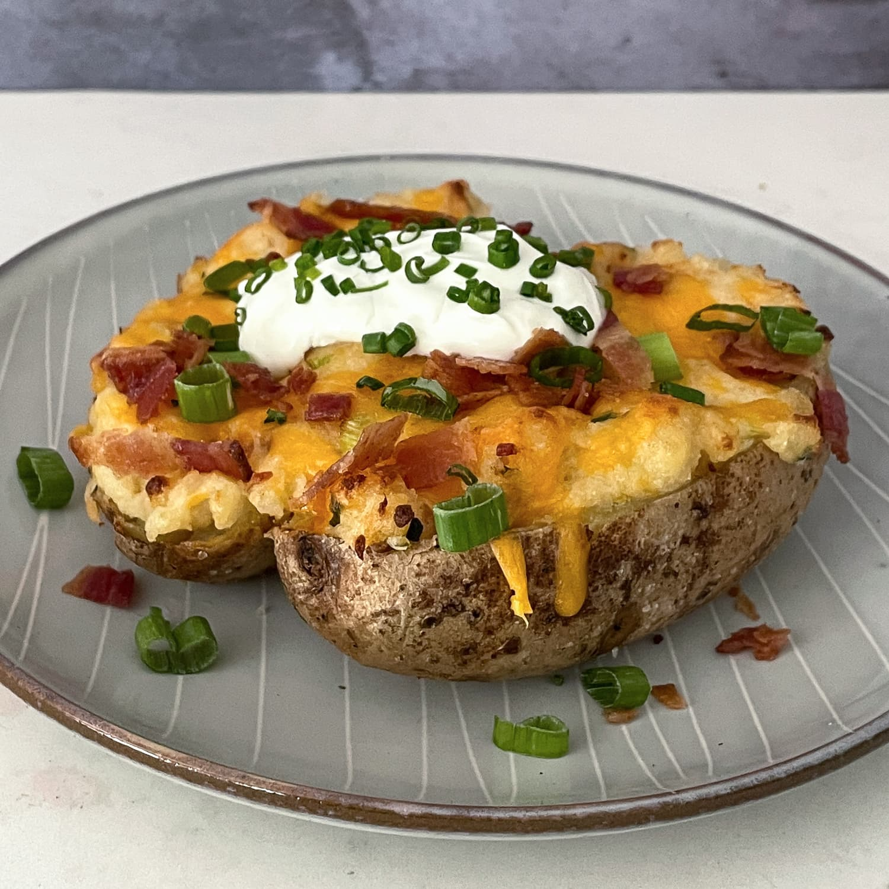

Loaded Potato

Description
I don't know about you but I like my potatoes LOADED! Load up on the knowledge with this here recipe!
Ingredients
- 1 large potato
- 1/8 a stick of butter
- 2 tablespoons of salt
- 1 tablespoon of pepper
- 3 tablespoons of olive oil
- 1/4 cup of shredded cheddar cheese
- 1 tablespoon of bacon bits
- 4 slices of jalepenos
Steps
- Heat your oven to 425 degrees
- Wash your potato and then coat in olive oil and sprinkle with 1 tablespoon of pepper
- Cook the potato for 1 hour and 15 minutes
- Slice long way down the middle without cutting all the way through
- Fill with the remaining butter and mash it around to fully melt
- Sprinkle in salt, pepper and cheese and mash until cheese melts
- Fill with bacon bits and jalepenos
- Enjoy!